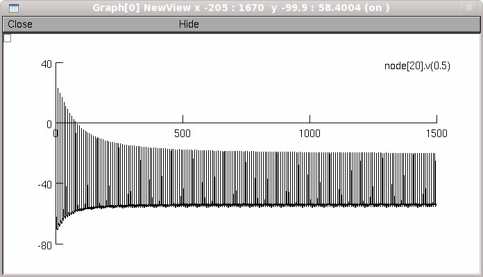

This is the readme for the model associated with the paper Bellinger SC, Miyazawa G, Steinmetz PN (2008) Submyelin potassium accumulation may functionally block subsets of local axons during deep brain stimulation: a modeling study. J Neural Eng 5:263-74 These model files were implemented by Bellinger and contributed to ModelDB by Steinmetz. Usage: Simply auto-launch from ModelDB or download and extract the archive then under: mswin ----- Compile the mod files with mknrndll. Double click the mosinit.hoc file Linux ----- Compile the mod files with nrnivmodl. Start by typing "nrngui mosinit.hoc" MAC OS X -------- Drag and drop the newly expanded folder onto the mknrndll icon. Drag and drop the mosinit.hoc file within this folder onto the nrngui icon. Once the simulation is started ------------------------------ Select either the long run (1 3/4 hours on a 2.8GHz Pentium 4) or the short run by pressing the appropriate button. The long run should reproduce fig2b: 